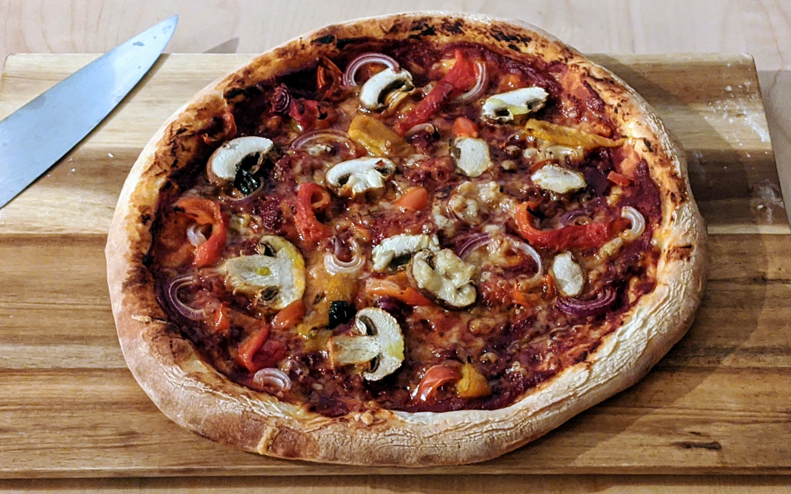

..@..♦.D.

|
Présentation 
|
Blog
|
Recettes
|

Pour une pizza (nourrissant deux personnes maximum) :
Remarque : cette recette est facile, rapide, et le résultat est bon. Pour obtenir un résultat vraiment excellent, comparable aux pizzas qu'on peut trouver dans une bonne pizzeria, il faut part faire sa pâte soi-même, et d'autre part la cuire dans un four adapté. Faire sa pâte soi-même fait le plus gros de la différence, et vaut la peine pour impressionner ses invités. Si on veut vraiment optimiser le processus, on peut acheter une pierre à pizza qui va rester chaude lorsque la pâte froide est disposée dessus, ce qui permet d'éviter l'histoire de rajouter du papier alu et d'obtenir une meilleure cuisson.